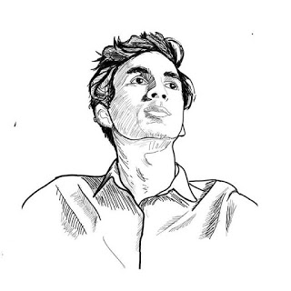

2019
I complete my secondary education at Rangpur Zila School.I have also participated in Notional Physics Olympiad and gain 8th position in the divisional round.
|
 Fahim Ratul |
I complete my secondary education at Rangpur Zila School.I have also participated in Notional Physics Olympiad and gain 8th position in the divisional round.
I have selected for National Astro-olympiad.I was a joint convener of Rangpur Zila School science club.
Wish me Happy Birthday